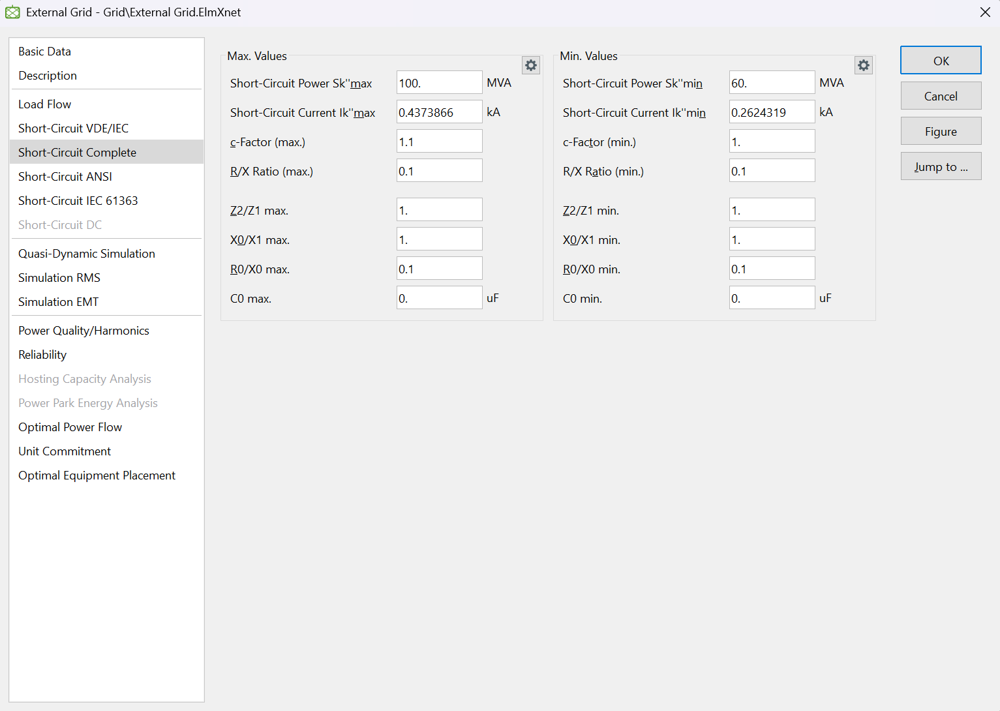
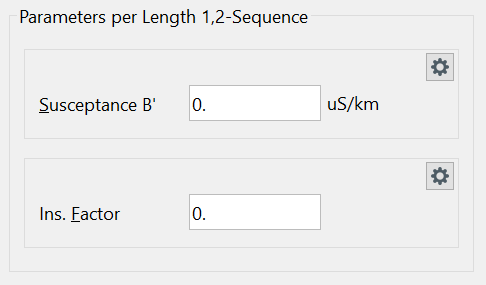
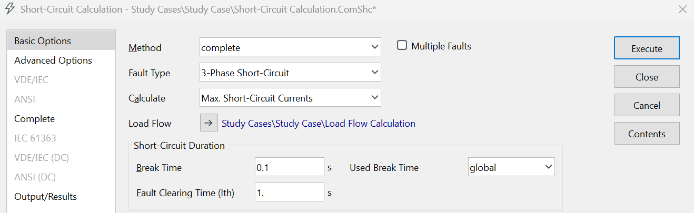

LAB 2#
Den første delen av LABEN er å opprette et 11 kV distribusjonsnett basert på de oppgitte nettdataene. Den andre delen er å utføre ulike beregninger og analyser av nettet.
Du skal levere inn to dokumenter i Canvas:
En .pfd-fil av kraftsystemmodellen din (.pfd er filformatet som benyttes av PowerFactory, og er IKKE det samme som PDF-formatet).
Et dokument som presenterer simuleringsresultatene for de ulike oppgavene.
3 OPPGAVE 1: NETTKONFIGURASJON#
TRANSFORMATORDATA#
Tabell 1 viser verdiene som skal legges inn for transformatorene under Type → Base Data. Alle andre data skal forbli uendret.
Tabell 1. Transformatordata#
Navn |
Fra samleskinne |
Til samleskinne |
V_HV kV |
V_LV kV |
Merkeytelse |
Kortslutningsspenning \(u_k\) |
|---|---|---|---|---|---|---|
T1 |
HV Bus |
LV Bus |
132 |
11 |
40 MVA |
3 % |
T2 |
Area 1 HV |
Area 1 LV |
11 |
0,23 |
400 kVA |
6 % |
T3 |
Area 2 HV |
Area 2 LV |
11 |
0,23 |
700 kVA |
6 % |
T4 |
Area 3 HV |
Area 3 LV |
11 |
0,23 |
2,0 MVA |
6 % |
EKSTERNT NETT (EXTERNAL GRID)#
I komponenten External Grid, gå til fanen «Short-Circuit Complete», slik vist i figur 2.
Endre følgende parametere:
Maksimalt kortslutningsnivå \(S''_{k,\text{max}}\) til 100 MVA
Minimalt kortslutningsnivå \(S''_{k,\text{min}}\) til 60 MVA
Disse verdiene angir henholdsvis den høyeste og laveste tilgjengelige kortslutningsytelsen fra det overliggende nettet og benyttes ved kortslutningsberegninger i kraftsystemmodellen.

LASTDATA#
Fyll inn aktiv effekt og effektfaktor for de ulike lastene i systemet. Dataene for lastene er gitt i tabell 2 nedenfor.
Tabell 2: Lastdata for de tre forsyningsområdene#
Last |
Aktiv effekt [kW] |
Effektfaktor |
|---|---|---|
Lastområde 1 |
150 |
0,96 (induktiv) |
Lastområde 2 |
400 |
0,96 (induktiv) |
Lastområde 3 |
1500 |
0,96 (induktiv) |
KABLER#
Legg inn kabellengde, resistans, reaktans og kapasitans i PowerFactory-modellen i henhold til dataene i tabell 3.
Se Vedlegg 1 for tekniske data for Draka-kabelen. Ved oppslag av kabeldata skal flat kabelkonfigurasjon (flat cable configuration) benyttes.
Merk#
For å legge inn kabelens kapasitansverdi:
Åpne kabeltypen i PowerFactory.
Gå til fanen «Load Flow».
Klikk på tannhjulsikonet (Gear Symbol).
Endre inndatatypen fra Susceptance B′ til Capacitance C′, slik vist i figur 2.
Legg deretter inn kapasitansverdien fra kabeldataene.
Dette sikrer at kabelkapasitansen registreres direkte som kapasitans per lengdeenhet i modellen.

Tabell 3: Kabeldata#
Kabel |
Mellom samleskinner |
Kabelmerke/-type |
Kabelegenskaper per km |
Lengde |
|---|---|---|---|---|
Kabel 1 |
LV Bus og Area 1 HV |
TSLI 12/20 (24) kV Cu 3x1x150 |
Se Vedlegg 1 |
200 m |
Kabel 2 |
Area 1 HV og Area 2 HV |
TSLI 12/20 (24) kV Cu 3x1x150 |
Se Vedlegg 1 |
2000 m |
Kabel 3 |
Area 2 HV og Area 3 HV |
TSLI 12/20 (24) kV Cu 3x1x150 |
Se Vedlegg 1 |
1000 m |
Kabelegenskapene som skal legges inn for hver kabel er:
Resistans (R) [Ω/km]
Reaktans (X) [Ω/km]
Kapasitans (C) [μF/km]
Verdiene hentes fra Vedlegg 1 for kabeltypen TSLI 12/20 (24) kV Cu 3x1x150.
EKSPORTER MODELLEN DIN#
Når alle nettkomponenter og tilhørende data er lagt inn, skal modellen eksporteres fra PowerFactory til en .pfd-fil (PowerFactory Data File).
Fremgangsmåte:
Velg File → Export → Data (*.pfd; *.dz).
Velg modellen du nettopp har opprettet.
Klikk OK.
PowerFactory vil spørre om prosjektet skal deaktiveres.
Klikk Yes.
Den eksporterte .pfd-filen skal leveres sammen med besvarelsen i Canvas.
OPPGAVE 2 – LASTFLYTANALYSE#
I denne oppgaven skal du utføre lastflytberegninger (Load Flow / Power Flow) for å bestemme:
Spenninger i nettet
Effekttap i nettet
Belastningsgrad for transformatoren
a)#
Utfør en lastflytanalyse i PowerFactory.
Besvar oppgaven med et bilde av nettet der beregningsresultatene vises.
b)#
Anta at du skal legge til en ekstra last på 200 kW i systemet.
Denne lasten kan kobles til enten:
Area 1 (LV-siden)
Area 2 (LV-siden)
Area 3 (LV-siden)
Hvor ville du plassert denne lasten?
Begrunn svaret ditt.
Merk: Fjern den ekstra lasten etter at denne deloppgaven er gjennomført.
c)#
Endre lengden på Kabel 1 til 16 000 m.
Denne kabelverdien skal benyttes inntil annet blir oppgitt.
Utfør deretter en ny lastflytanalyse og presenter resultatene på samme måte som i oppgave a).
Vurder om kraftsystemet fortsatt har tilfredsstillende nettdrift.
Begrunn svaret med utgangspunkt i spenningsnivåene på samleskinnene (busbarene).
d)#
Hvor store aktive effekttap oppstår i nettet under simuleringen i oppgave 2 c)?
Oppgi svaret i passende enhet (kW eller MW) og kommenter resultatet.
OPPGAVE 3 – KORTSLUTNINGSANALYSE#
Ved utførelse av kortslutningsberegninger skal beregningsmetoden «Complete» benyttes.
Denne beregningsmetoden velges før kortslutningsanalysen kjøres, slik vist i figuren under.
Kortslutningsanalysen skal brukes til å bestemme strømmer og nettforhold ved feiltilstander, og resultatene skal analyseres i de påfølgende deloppgavene.

Før kortslutningsanalysene utføres, skal lengden på Kabel 1 endres tilbake til 200 m.
a)#
Beregn følgende for hver samleskinne (busbar) i nettet:
Maksimal trefase kortslutningsstrøm
Minimal trefase kortslutningsstrøm
Bruk PowerFactory til å utføre beregningene.
Besvar oppgaven med et skjermbilde som viser resultatene for alle samleskinnene.
b)#
Forklar kort hvorfor kortslutningsverdiene er forskjellige mellom de ulike samleskinnene i nettet.
Hint: Vurder avstanden til spenningskilden og den totale impedansen mellom feilstedet og nettet.
c)#
Beregn kortslutningsytelsene i nettet manuelt ved hjelp av impedansmetoden.
Resultatene skal presenteres i en tabell.
Rapporten skal inneholde:
Fremgangsmåte
Nødvendige formler
Mellomregninger
Endelige resultater
Sammenlign gjerne de manuelle beregningene med resultatene fra PowerFactory.
Endring av nettdata#
Endre kortslutningsytelsen i det eksterne nettet til:
Maksimal kortslutningsytelse \(S''_{k,\text{max}}\) = 1000 MVA
Minimal kortslutningsytelse \(S''_{k,\text{min}}\) = 600 MVA
Disse verdiene skal benyttes i resten av oppgaven.
d)#
Utfør nye kortslutningsberegninger i PowerFactory.
Bestem kortslutningsverdiene ved distribusjonstransformatorene med de oppdaterte verdiene for det eksterne nettet.
Denne deloppgaven skal løses ved hjelp av datasimulering.
e)#
Sammenlign resultatene fra oppgave a) og oppgave d).
Forklar kort hvorfor resultatene er forskjellige.
Fokuser spesielt på hvordan endringen i tilgjengelig kortslutningsytelse i det eksterne nettet påvirker:
Kortslutningsstrømmene
Kortslutningsytelsene
Nettets impedans sett fra feilstedet
Endring av transformatorparametere#
Øk den interne transformatorreaktansen (kortslutningsspenningen) \(u_k\) for transformator T1 til:
f)#
Utfør kortslutningsberegningene på nytt etter at \(u_k\) er økt til 13 %.
Presenter de nye resultatene.
g)#
Hvorfor er resultatene forskjellige fra resultatene i oppgave a)?
Forklar kort hvordan en økning i transformatorens kortslutningsspenning \(u_k\) påvirker:
Transformatorens impedans
Kortslutningsstrømmen
Kortslutningsytelsen i nettet
Begrunn svaret med relevante kraftsystemteoretiske sammenhenger.